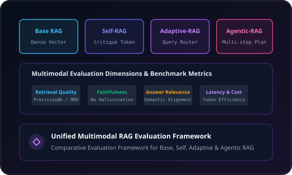

LLM • RAG ResearchUnified Multimodal RAG Evaluation & Query-Adaptive Selection
A research-grade framework to benchmark and compare multiple Retrieval-Augmented Generation architectures (Basic RAG, Self-RAG, Adaptive-RAG, Agentic-RAG) using standardized metrics and a dedicated Final Judge LLM decision engine.
Evaluation Dimensions: Context Precision, Answer Relevance, Faithfulness, Latency, and Token Efficiency.
Multi-Modal Ingestion: Evaluates PDFs, images, and text chunks with source-grounded evidence verification.
Python
TypeScript
RAG
ChromaDB
LangChain
LLMs